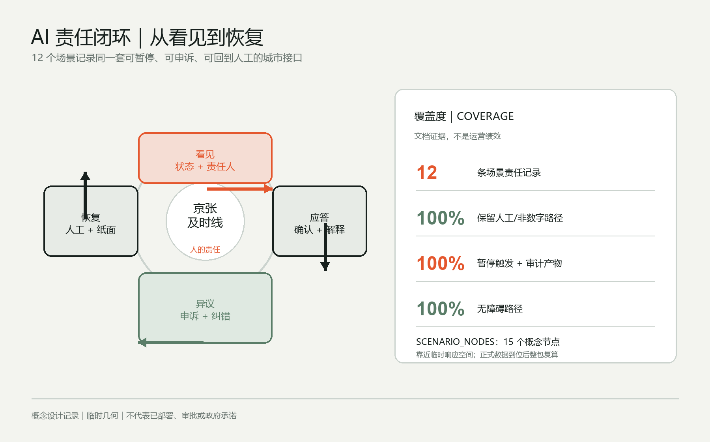

01
验证
众智园
开放测试信号塔
让 AI 的响应时间成为城市公共责任

43.6 平方公里统筹研究范围关注生态系统，11.4 平方公里总体设计范围关注更新与公共空间，368.4 公顷重点区关注三处详细原型。

开放测试信号塔
人工应答屋
城市交接大厅

一条南北响应主脊、六条东西联系、三座响应空间和四个响应门。十二个建筑原型与八类更新项目只验证空间关系；概念线位不构成道路红线、桥隧或工程可行性结论。

低速机器人横穿测试 / Low-speed robot crossing
多语导视共译测试 / Multilingual wayfinding
端侧算力能耗回报 / Edge-compute energy return
公共服务接管演练 / Public-service takeover drill
人才服务助手 / Talent-service assistant
无障碍遗产讲述 / Accessible heritage narration
夜行路径陪伴 / Night-route companion
社区空间预约 / Community-space booking
小店多语沟通 / Local-shop translation
环境巡护助手 / Environmental stewardship
公共表单解释 / Public-form explanation
活动人流提示 / Event-flow advice

公开服务状态与责任人，先让人知道谁在负责。
有人确认并解释，不把自动回复当成最终决定。
实体、电话和纸面渠道都可以纠错与申诉。
故障或争议时切回人工、纸面或无账户路径。
覆盖率是矩阵字段的文档覆盖，不是部署绩效；节点靠近临时响应空间，正式数据到位后整包复算。

权威来源见 sources.json，缺口与复算触发条件见 assumptions.json，责任字段见 visual/assets/ai-responsibility-matrix.json，节点解释层见 visual/assets/scenario-nodes.json，完整任务、标准与深度覆盖见三个矩阵文件。
本页数值与 metrics.json 对齐。最终状态以 self_check.json 和 participant_preflight.py 输出为准。